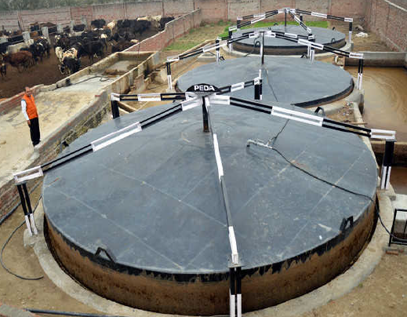
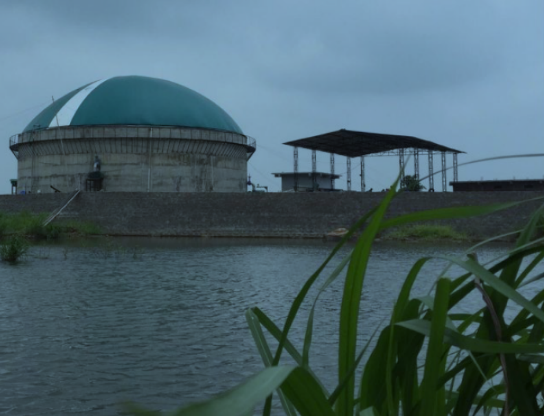

India has substantial potential to produce biogas and significantly reduce methane emissions. According to India's Second National Communication to the United Nations Framework Convention on Climate Change, approximately 20 percent of its anthropogenic methane emissions—81.9 MMTCO2e—come from agriculture (manure management), coal mines, municipal solid waste, and natural gas and oil systems.
To help meet this potential, the Government of India’s Ministry of New and Renewable Energy (MNRE) is investing heavily in a national strategy to increase biogas production and reduce methane emissions. The biogas strategy includes many policy initiatives, capacity building, and public-private partnerships. In addition to promoting biogas development, the strategy supports goals for sustainable development, sanitation improvements, and increased generation of renewable energy.
Waste-to-energy projects promote the recovery of energy from urban, industrial, and agricultural wastes. The projects focus on converting urban wastes, including municipal solid waste, industrial waste/effluent, and agricultural waste, into fuel in the form of biogas. The fuel is used to meet thermal requirements such as heating and cooking, power for meeting captive needs of industries or feeding into the grid, and compressed biogas (CBG) for vehicular fuel. MNRE provides financial incentives in the form of back-ended capital subsidies to encourage participation in these projects, incentives to state agencies for promoting biogas projects, training, and outreach to project developers. Currently, waste-to-energy projects have a cumulative installed capacity of 702,508 m3 per day of biogas generation, 84,759 kg per day of CBG, and 141 MW of biogas-based power per day.
|  |
| National Biogas and Organic Manure Programme Biogas plant |
The New National Biogas and Organic Manure Programme (NNBOMP) promotes the use of biogas produced from cattle manure and other organic wastes available in rural areas. The programme has helped establish multiple small-scale biogas plants with installed capacity ranging from 1 to 25 m3 per day. Families in rural areas use the plants to obtain cooking fuel and organic fertilizer. The NNBOMP also supports community-scale biogas plants with installed capacity ranges of up to 2500 m3 per day. MNRE provides 30 to 35 percent of project costs in the form of back-ended subsidies for setting up the biogas plants. To date, India has installed over 5 million small-scale biogas plants. The projects have added another 7.2 MW of biogas-based power generation capacity. Community-scale biogas plants developed under NNBOMP contribute 69,585 m3 of biogas generation capacity per day.
MNRE’s National Policy on Biofuels aims to reduce the amount of crude oil imported into India 10 percent by 2022 through increased use of ethanol, biodiesel, and CBG. To promote CBG, the Sustainable Alternative Towards Affordable Transportation Program supports development of 5,000 CBG plants with an expected production capacity of 15 million tons of CBG annually by 2023. These two initiatives work together to promote CBG as an automotive fuel source.
|  |
| GOBAR-Dahn initiative Biogas plant |
The GOBAR-Dahn initiative aims to improve sanitation in Indian villages by funding projects that process livestock manure and agricultural waste to produce biogas. MNRE provides up to 100 percent of the project cost for small-scale digesters in villages and larger-scale projects at dairies and other waste generating facilities.
MNRE is the nodal Ministry of the Government of India for all matters relating to new and renewable
energy. The broad aim of the Ministry is to develop and deploy new and renewable energy, including
biogas, to help meet the energy requirements of the country.